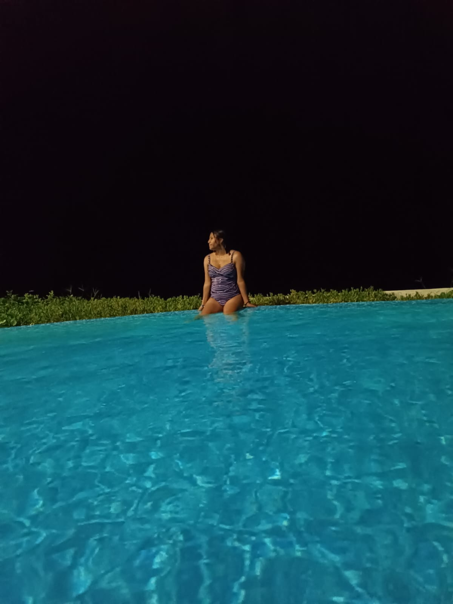
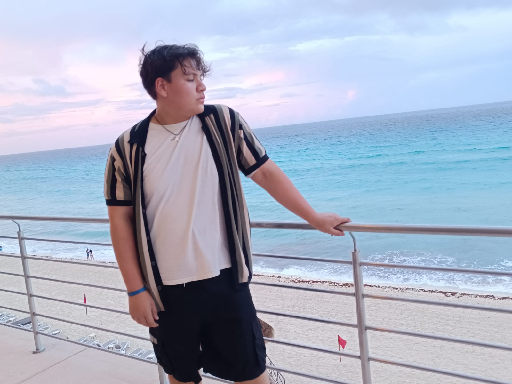
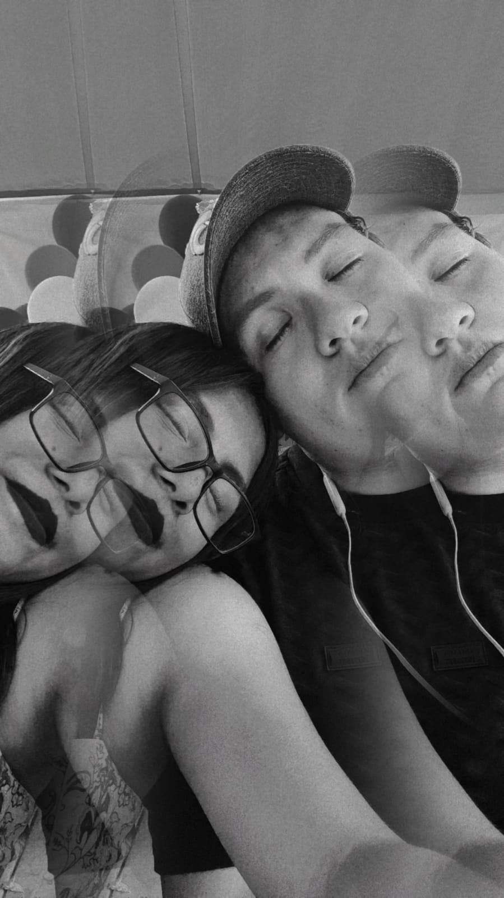
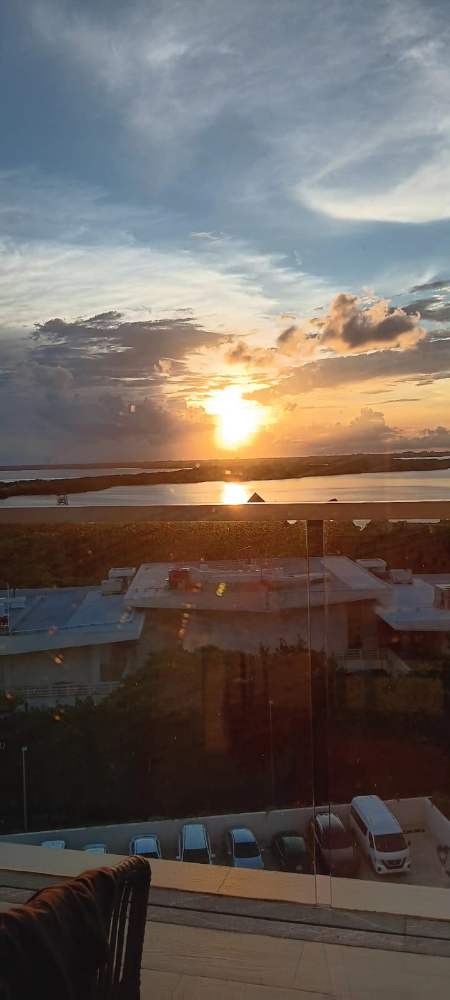
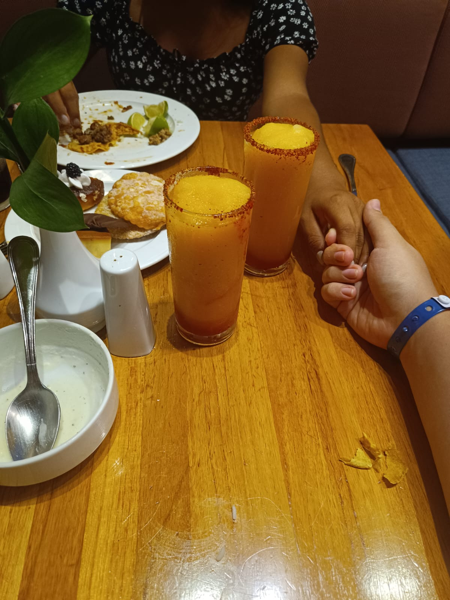

Mis pasatiempos






mon Cœur
¿por que la amo ?
esta parte va dedicada a lo que yo espero sea mi futura esposa ,quiero mencionar que yo no se si estaria aqui si no la hubiera conocido ,ella llego a mi vida en ese momento donde sientes que estas solo a pesar de estar rodeado de personas que te quieren ya sean amigos o familia etz.Ella llego asi sin mas ninguno tenia esperaba nada del otro solo nos contabamos como nos iba en nuestro dia a dia hasta que todo fue fluyendo y me empezo a gustar pasar tiempo con ella.El timpo paso y me di cuenta de que tenia una oportinidad ,ella podria sentir lo mismo que yo y por primera vez decidi avanzar y no quedarme estancado por miedo al compromiso como antes Y una noche se lo propuse ,me sudaban las manos de los nervios pero salio bien me dijo que ella me dijo que sus respuestas serian si a todas las propuestas que yo le hiciera.pasaron casi 3 años de eso y el destino decidio ponerme una prueba algo para saber si era digno de ella ,algo que ni yo ni ella se esperaba ,antes del 12 de marzo del 2024 ya habia convulsiones pero siempre tenian una causa para ellas ,hasta que ese dia me llevaron a una resonancia y vieron que tenia un tumor cerebral estaba impactado y sin embargo ella siempre estuvo a mi lado hasta el dia que me lo quitaron ,uando estuve en terapia intensiva ella estaba ,en mis rehabilitaciones por que no podia mover bien la parte derecha de mi cuerpo ella estuvo ,ella me llego a bañar y a darme de comer tambien y hasta el dia de hoy que estoy mejor sigue aqui conmigo por fin me siento acompañado y mas amado que nada la amo demaciado